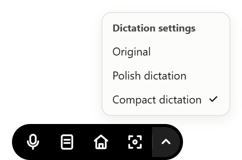

Same meaning. Far fewer words.
Um, I just wanted to ask if you could please send the report to Alice by Friday at 2 pm. Basically, please send it to Alice by Friday at 2 pm. Thank you.
Send report to Alice by Friday at 2 pm.
Fillers, pleasantries and repetition removed.
Names, deadlines and instructions preserved.